Valorização
Defesa do piso salarial, jornada digna, luta pelas 30 horas e cuidado com a saúde física e mental de quem cuida.
Eleições Coren-RN 2026 · 8 e 9 de novembro
Avançaenfermagem
Valorização, luta e representatividade. Uma nova força para a Enfermagem do RN, feita por quem vive o plantão.
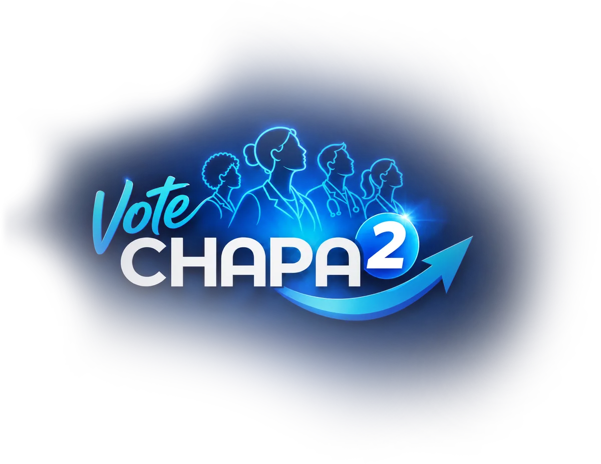
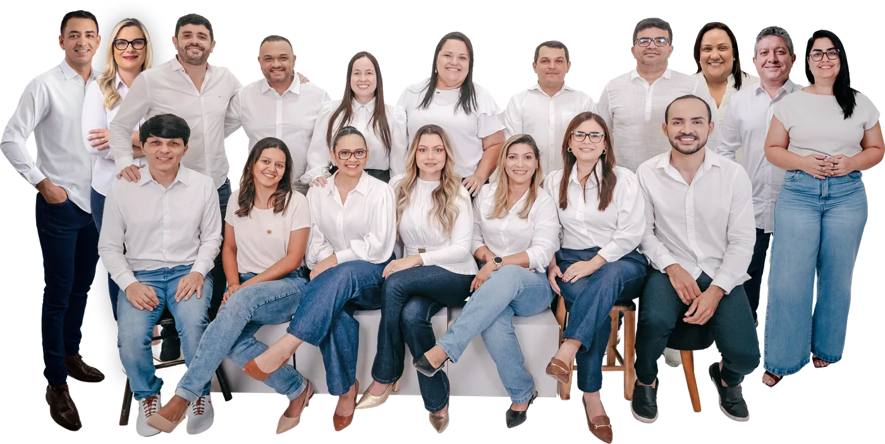
Abre 08/11 às 8h · encerra 09/11 às 8h
Contagem para a abertura da votação (horário de Natal/RN).
Dados da própria campanha, conferidos no perfil @votechapa2corenrn em 28/10/2026.
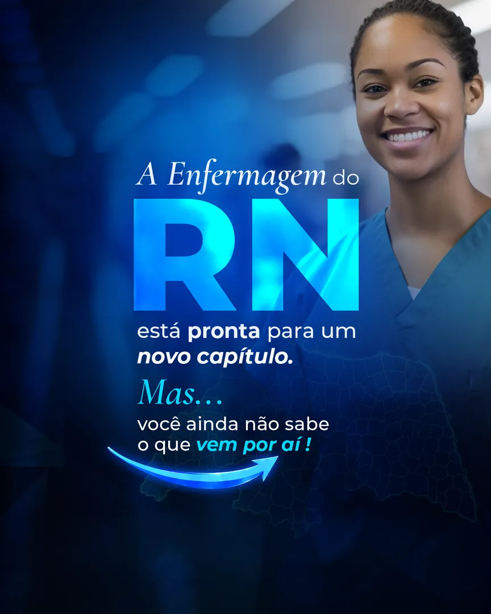
Somos novos nomes, novas ideias e uma só força: a vontade de lutar por quem cuida, trabalha e faz a Enfermagem acontecer todos os dias. Experiência, renovação e coragem para transformar.
Profissionais do SUS, da rede privada, do SAMU, da atenção básica e da docência, da capital ao interior, unidos para fazer o Conselho trabalhar mais perto de quem está no plantão.
Defesa do piso salarial, jornada digna, luta pelas 30 horas e cuidado com a saúde física e mental de quem cuida.
Fiscalização que combate a sobrecarga e o dimensionamento inadequado, e enfrentamento firme à violência e ao assédio.
Técnicos e auxiliares com voz no plenário, um Conselho acessível e inclusivo, e atendimento ágil em todo o estado.
O que a Chapa 2 vai fazer no Coren-RN. Compromissos construídos ouvindo enfermeiros, técnicos e auxiliares em hospitais, UPAs, maternidades e unidades básicas de todo o RN.
Comissão Permanente de Acompanhamento e Defesa do Piso da Enfermagem no RN, para acompanhar a implementação, identificar descumprimentos, orientar e cobrar providências.
Condições de trabalho seguras, espaços adequados de descanso, apoio à luta pelas 30 horas semanais e ações permanentes de saúde física e mental.
Campanhas contra violência, assédio e agressões, e parcerias para acolhimento, apoio psicológico e orientação jurídica às vítimas.
Piso é direito. Valorizar é compromisso.
Tecnologia para processos mais ágeis e uma fiscalização que detecte dimensionamento inadequado, sobrecarga e condições inseguras, orientando e prevenindo.
Capacitações e oficinas práticas sobre dimensionamento de pessoal, materiais orientadores e suporte técnico para quem lidera as equipes.
Rede colaborativa e um ambiente para reuniões, capacitação e suporte, aproximando os RTs do Conselho.
Apoiar quem lidera é proteger a linha de frente.
Capacitação levada além da capital, com educação permanente acessível e conectada à realidade de cada área de atuação.
Cursos gratuitos, conteúdos atualizados, certificação e trilhas por área de atuação para profissionais de todo o estado.
Incentivo a estudos e boas práticas, aproximando o Coren-RN das universidades e dos grupos de pesquisa.
Mais acesso. Mais qualificação.
Câmara Técnica mais próxima, com banco digital de consulta rápida a pareceres e canais virtuais para tirar dúvidas sobre o exercício profissional.
Mais soluções digitais e revisão de fluxos internos para cortar etapas desnecessárias, respeitando os requisitos legais.
Menos burocracia. Mais respeito ao seu tempo.
Avanço na acessibilidade física, comunicacional, digital e atitudinal, com ações de respeito à diversidade.
Ações permanentes de conscientização sobre racismo, LGBTfobia, capacitismo e outras formas de preconceito.
Formação em empreendedorismo, gestão, finanças, marketing e liderança para negócios éticos e sustentáveis.
Diversidade nos representa.
Diálogo com gestores e instituições para reconhecer as competências de quem investe em qualificação, e divulgação de especializações e caminhos de carreira.
Articulação com o Poder Legislativo por acesso diferenciado a cinemas, teatros, shows e eventos culturais.
Quem cuida também merece cultura e descanso.
Diga sim ao avanço da Enfermagem
Ver como votarTécnicos e auxiliares de Enfermagem são fundamentais para o funcionamento da saúde e conhecem de perto os desafios da profissão. A Chapa 2 defende a participação desses profissionais no plenário do Coren-RN, valorizando suas experiências e contribuições.
Quem está na linha de frente do cuidado também precisa ter voz nas decisões.
Experiência, renovação e representatividade de todas as áreas da Enfermagem para fazer o Coren-RN avançar.
Enfermeiros
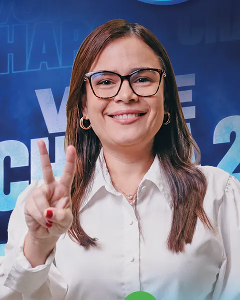
SESAP/RN · Programa Estadual de Imunização · Hospital Geral Dr. João Machado
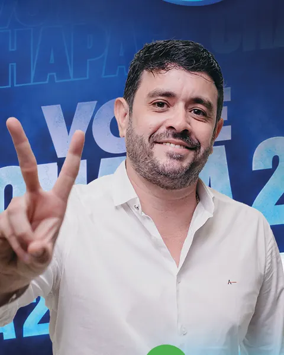
SMS Natal · Hospital Márcio Marinho (Parnamirim) · Hospital Rio Grande
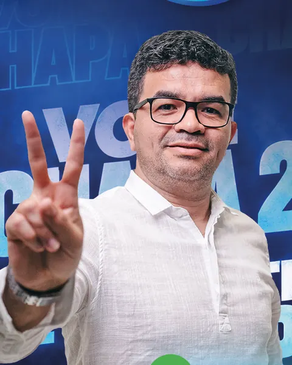
Unidade Mista de Mãe Luiza · CAPS AD III Parnamirim · Docente
SESAP/RN · Hospital Deoclécio Marques de Lucena
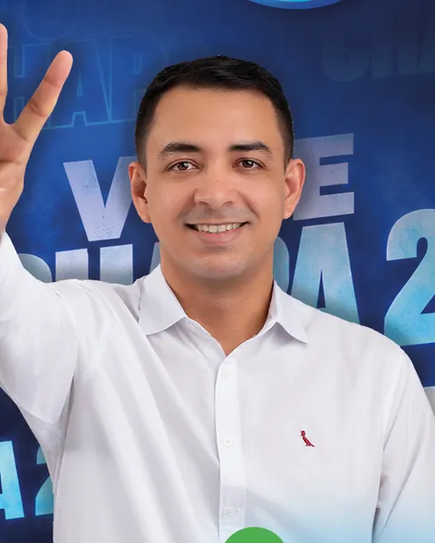
ESF Viçosa/RN · Unidade Mista de Saúde de Lucrécia/RN
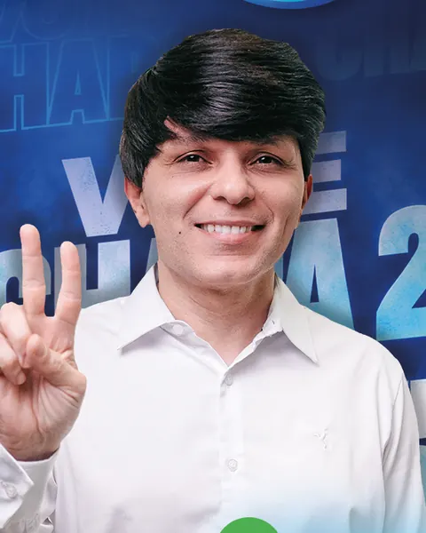
Hospital Rio Grande · Grupo Justiz · INCOR
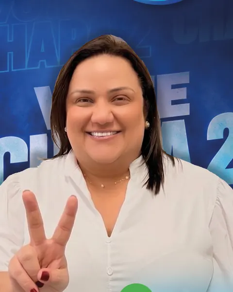
Hospital Estadual Telecila Freitas Fontes (Caicó) · Professora da UnP
Neuronavegadora no Hospital Wilson Rosado (Mossoró)
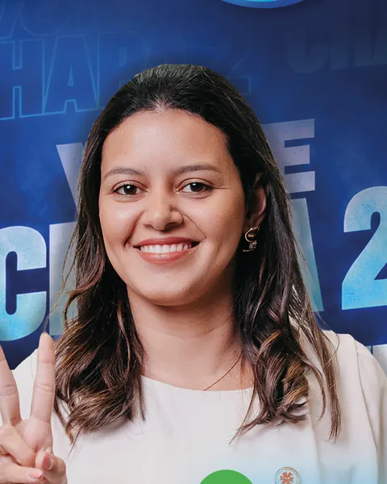
Hospital Universitário Onofre Lopes · SMS Natal · SAMU 192
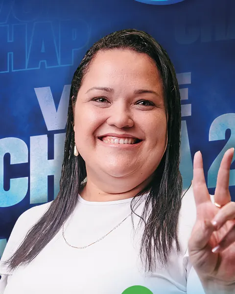
SESAP/RN · Hospital Dr. José Pedro Bezerra · Hospital Antônio Prudente
Técnicos e auxiliares de Enfermagem
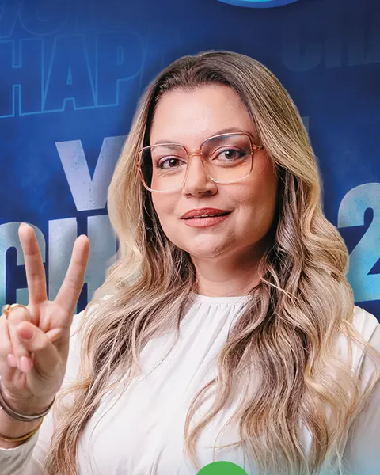
SESAP/RN · Hospital Geral Dr. João Machado · Residência Terapêutica Oeste
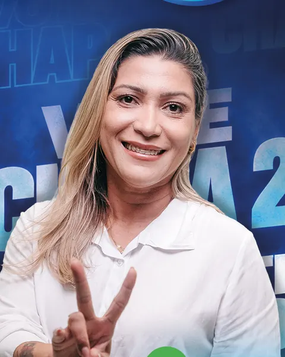
Imunização da 3ª URSAP · SMS João Câmara
UPA de São José de Mipibu · Hospital dos Pescadores
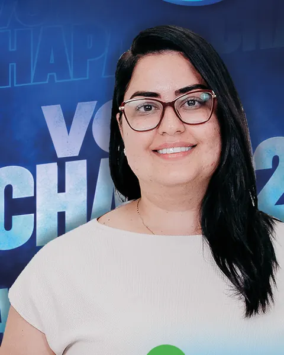
Liga Contra o Câncer · Mais Vida Cooperativa
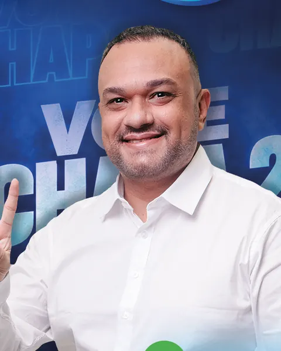
Hospital Deoclécio Marques de Lucena · HUOL
SESAP/RN · Hospital Monsenhor Walfredo Gurgel
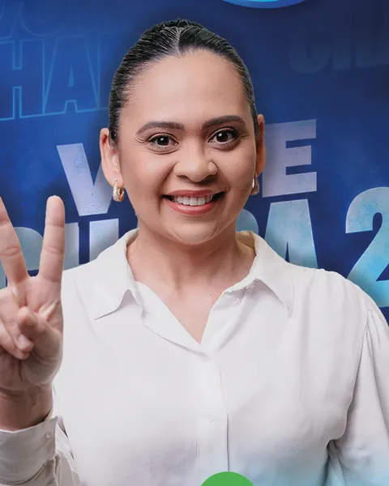
SAMU 192 Metropolitano · Maternidade Parteira Maringá (Assú)
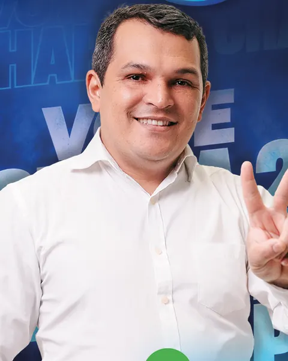
Liga Contra o Câncer · Hospital Dr. Luiz Antônio
A votação dura 24 horas: das 8h de 8 de novembro às 8h de 9 de novembro de 2026, no horário local. Antes, verifique se você está apto a votar.
Entre em www.votaenfermagem.org.br pelo celular ou computador.
Escolha o Conselho Regional do Rio Grande do Norte.
Digite seu CPF e faça a autenticação pedida pelo sistema.
Selecione a Chapa 2 – Avança Enfermagem e confirme seu voto.
Diga não às fake news. Pela Resolução Cofen nº 791/2025, art. 43, divulgar fatos inverídicos sobre candidatos ou chapas é infração ética, sujeita às penalidades do Código de Ética dos Profissionais de Enfermagem. Antes de compartilhar, verifique a fonte.
Não. A votação é 100% on-line, pelo site www.votaenfermagem.org.br, no celular ou no computador.
Começa às 8h do dia 8 de novembro de 2026 e termina às 8h do dia 9 de novembro, no horário local. São 24 horas para votar, inclusive durante ou depois do plantão.
Seu CPF. No site, você seleciona Coren-RN, informa o CPF e faz a autenticação pedida pelo sistema. Confira com antecedência se está apto a votar.
Enfermeiros (Quadro I) e técnicos e auxiliares de Enfermagem (Quadros II e III). São 18 candidatos que atuam no SUS, na rede privada, no SAMU, na atenção básica e na docência.
Verifique a fonte antes de compartilhar. Divulgar fatos inverídicos sobre candidatos ou chapas é infração ética pela Resolução Cofen nº 791/2025, art. 43.
Anote a data, avise os colegas de plantão e vote dentro do prazo. O futuro da nossa profissão se constrói juntos.